Recuperació després de formateig
INICIAL
Aquests són tots els fitxers amb els que partim d’es d’un inici.
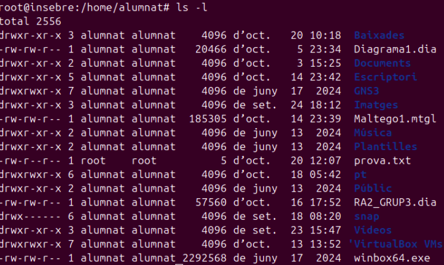
Per saber quina és la carpeta personal, hem d’executar la comanda:
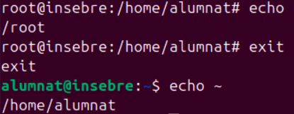
Pas 0. Preparar-ho tot
Photorec és el programa que farem servir per recuperar fitxers. Ve dins del paquet testdisk Per ainstalar-lo executarem:
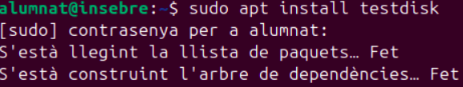
Crearem una carpeta dins de la nostra carpeta personal per a aquesta practica,
l'anomenarem practica. Ens situarem dins i amb pwd podem veure on ens trobem.

Ens descarregarem una foto d’internet la qual anomenarem foto.
Crearem un text des de la terminal amb echo el qual guardarem dins del fitxer notes.txt.

Comprovem que estiguin
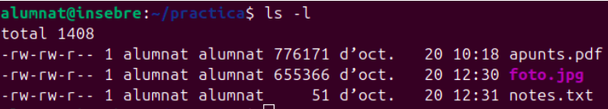
Crearem un fitxer de 200 MB ple de zeros, el qual farà de disc durant tota la
pràctica. És com un disc nou acabat de comprar, buit i sense formatar.
Comprovarem que existeixi, mostrant el resultat amb MB utilitzant -h.
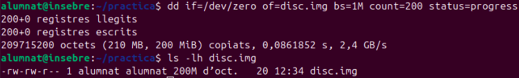
Li donarem el format ext.4 al disc amb mkfs make file system.
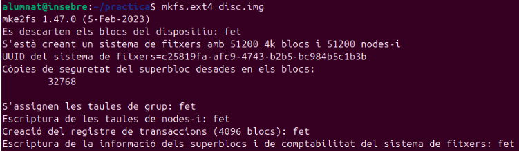
2.2 Munta el disc
Connectarem el disc a una carpeta per poder-hi entrar. En aquest cas será a la
carpeta prova indicant-li amb -o loop que el disc és un fitxer, no un disc físic.
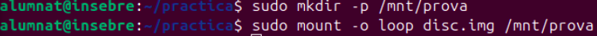
Copiem tots els fitxers dins de prova.
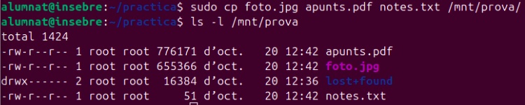
2.4 Desa l'empremta digital dels originals
Utilitzarem sha256sum per generar els hashos dels fitxers
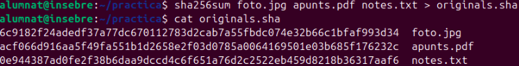
2.5 Desmunta el disc
Passarem a desmontar el disc.
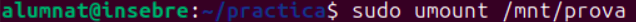
Part 3. Formateig d'alt nivell
Ara el desmontarem -E nodiscard li diu a mkfs que només reescrigui l'índex del disc,
sense buidar-ne el contingut.
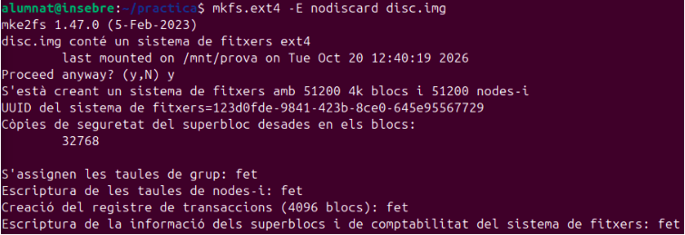
Montarem el disc i mirarem que hi ha dins on veurem que els fitxers
han desaparegut i que el disc pareix buit.
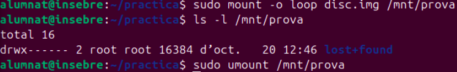
Part 4. Recuperar els fitxers
Executarem photorec i mirarem que ha trobat. Com podrem veure són els nostres 3
fitxers anteriors, l’únic que els noms són diferents dels originals, perquè els noms es
guardaven a l'índex que hem esborrat.
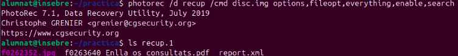
Podem veure que s’ens crea una carpeta de la recuperació dins de practica.
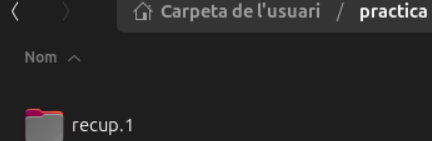
Xifrarem recup.1/* amb el mateix métode de abans sha256sum i després fem un
cat sobre els originals i podrem veure que tenen exactament el mateix hash.
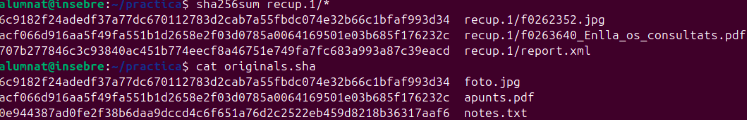
Com que un fitxer de text no té capçalera, no l’ha pogut reconéixer, però podem
buscar-lo per alguna paraula que aquest contenia amb la comanda grep.
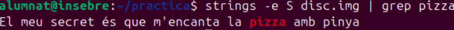
Part 5.Esborrat de baix nivell
Farem un formateig de baix nivell. Omplirem el disc de zeros, amb conv=notrunc fa
que dd escrigui a sobre del fitxer que ja existeix.
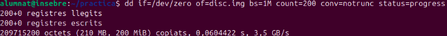
Al tornar a recuperar-ho, podrem veure un report.xml com es el cas, o un missatge
que diu que la carpeta no existeix. En tots dos casos vol dir que photorec no ha trobat cap fitxer.
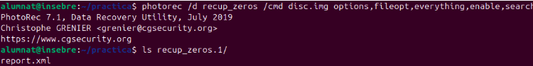
Aquesta vegada no ha de sortir res ja que hem formateigat el disc omplint-lo de zeros.
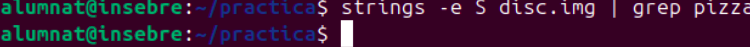
Pràctica gestió de processos
Crea la carpeta personal missió, entra dins d’aquesta i comprova on ets.
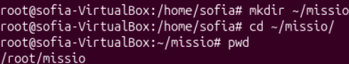
Crea el primer script anomennat minador amb l'editor nano
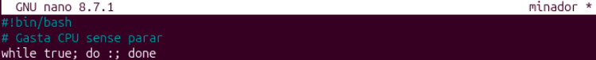
Comprova que el fitxer s'ha desat bé mostrant-ne el contingut.
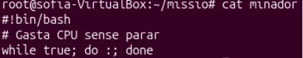
Mira els permisos del fitxer.
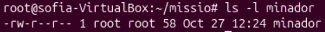
Prova d'executar-lo. Pels permisos que hem vist abans, podrem veure que no té el d’execució, així que no ens dixara executar-lo.
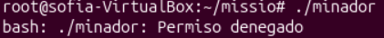
Dona-li permís d'execució amb chmod +x i torna a mirar els permisos.
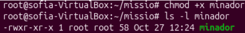
Crea els altres quatre scripts:
Script backup_nocturn.
Aquest crea una còpia de seguretat que es passa el temps esperant
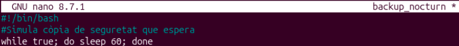
Script espia
La línia trap fa que, quan rebi el senyal SIGTERM, en lloc d'acabar escrigui un missatge
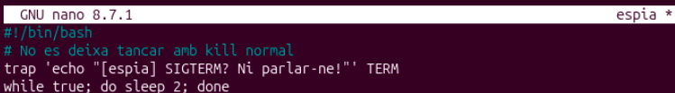
Script descarrega.sh
Simula la descàrrega d'una ISO. Cada 1 % li costa feina de CPU, i va escrivint el progrés al fitxer progres.txt .
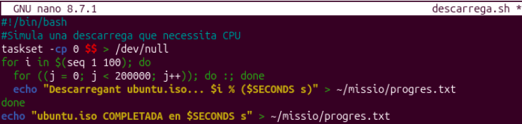
Script sospitosos.sh
Engega els tres processos del sabotatge en segon pla. El taskset -c 0 obliga els dos minadors a fer servir la mateixa CPU, perquè la missió surti igual a totes les màquines.
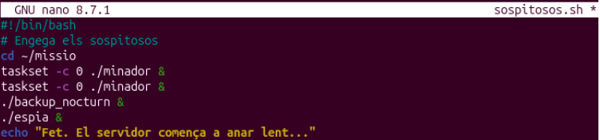
Dona permís d'execució als quatre fitxers nous de cop i comprova-ho.
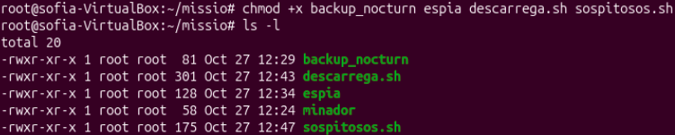
Engegar el sabotatge.
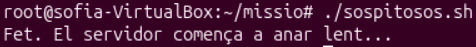
A T1 , mira el PID de la teva shell i mira els processos d’aquest terminal.
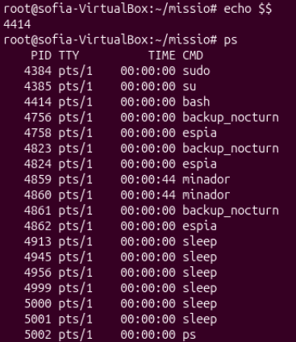
Compta quants processos té tot el sistema. La barra | passa el resultat de ps a wc -l, que compta les línies.
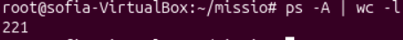
Mira la llista dels teus processos i busca-hi els sospitosos.
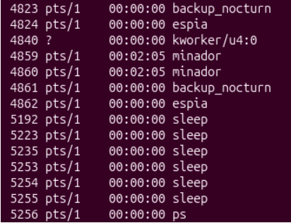
Mira on són dins l'arbre de processos.
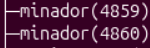
A T1, obre top .
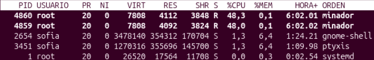
Amb ps surten els 5 processos que més CPU han fet servir, amb la línia de títols a dalt.
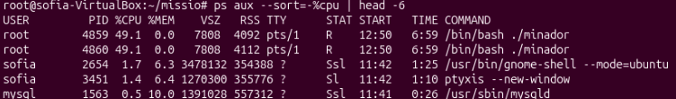
A T1 , filtra la llista completa per quedar-te només amb les línies que contenen minador.
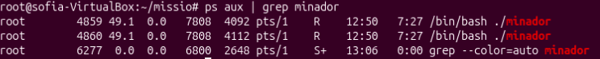
Fes servir aquest truc perquè no surti la línia del grep . (no funcionava)
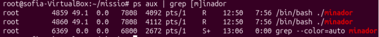
Demana només els PID amb pgrep .
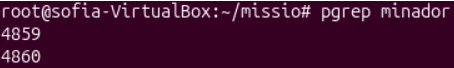
Busca tots els sospitosos alhora, amb el nom al costat del PID.
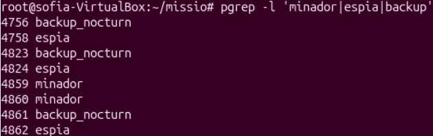
Demana a ps només les columnes que t'interessen dels tres sospitosos.
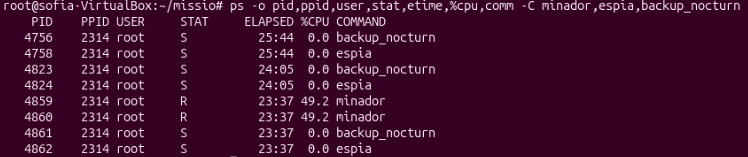
Descobreix qui és el pare.
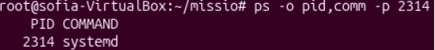
A T2 , entra a la carpeta i crea el fitxer de progrés.
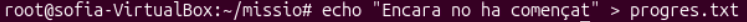
A T2 , posa un monitor executant watch -n 1 cat progres.txt que mostri el fitxer de
progrés cada segon. Aquest és deixará obert fins al final de la missió. De mentres a T1 , engega la descàrrega en primer pla.
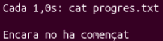
A T1 no surt res i no pots escriure, perquè el terminal està ocupat, prem Ctrl+Z.
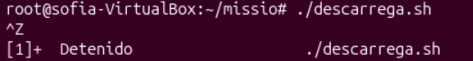
Mira els treballs d'aquest terminal.
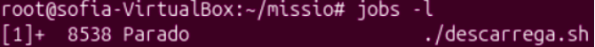
Fes que continuï en segon pla.
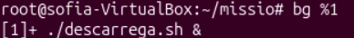
Porta-la al primer pla. A T1 el terminal torna a quedar ocupat.
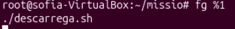
Deixa-la definitivament en segon pla.
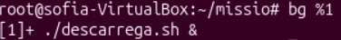
A T1 , obre top només amb aquests tres processos.
Intenta pujar la prioritat de la descàrrega. Es podrá observar com el proces 4860 ha passat a ser el primer.
A T1 , busca els PID dels minadors.
Envia'ls el senyal SIGTERM i Comprova que ja no hi són
Busca el PID de l'espia i envia-li el senyal SIGTERM. Al comprovar veurem que encara segueixen alli.
Envia-li SIGKILL, que no es pot ignorar, i torna-ho a comprovar.
Busca el PID del backup, posa’l en pausa i mira l seu estat.
Fes-lo continuar i torna a mirar l'estat.
A T1 , engega una descàrrega nova en segon pla.
Obre un terminal nou ( Ctrl + Alt + T ), que serà el nou T1 , i entra a la carpeta. Engega la descàrrega amb nohup al davant.
Fi de la missió · neteja
Atura tots els processos de la missió que encara quedin i comprova que no en queda cap.
Tipus de formateig
Amb fdisk -l mirem quin es el disc de la maquina, que és sda i el que hem afegit és sdb.
Entrarem a l’eina fdisk seleccionant el disc que hem afegit, el sdb. Dins d’aquesta
indicarem amb la n que volem fer una nova partició del tamany de 20GB. Ho guardem i sortim amb w.
Aquesta partició la formatarem a un format ext4.
Ens dirigirem dins de la carpeta de muntatge temporal on crearem una carpeta particio1.
Montarem la partició /dev/sdb1 al directori /mnt/particio1/. Així ara qualsevol cosa
que guardesim dins d'aquesta carpeta s'escriurà físicament al nou disc de 20 GB.
Entrem dins de la carpeta on dins creem la carpeta prova i un fitxer buit anomenat prova2.
Sortirem del directori i desmuntarem la partició /dev/sdb1 del directori /mnt/particio1/ .

Ara podrem veure que al llistar els sistemes de fitxers, el sdb1 al primer no apareix
ja que l’haviem desmuntat, pero després fent un mount podrem veure a la última línia que hi apareix.
Perquè la partició es munti de manera automàtica i permanent cada vegada que engeguesim l'ordinador seguirem els següents pasos.
Primer mirarem el seu identificador, UUID i el copiarem.
Aquest l’enganxarem dins del fitxer fstab indicant-li on s’ha de montar.
Per últim, reiniciem l’ordinador i verifiquem que aquesta segueixi muntada.
Gestió d'usuaris 2na part
Crea la carpeta de l'estudi i entra-hi.
Crea tres subcarpetes, una per equip, i una de compartida. Posa-hi un fitxer d'exemple a cada carpeta d'equip.
Mira com ha quedat tot.
Mira els permisos del fitxer joc.py
Mira la mateixa informació amb stat, que dona els permisos en lletres i en número alhora

Posa els permisos 750 a la carpeta codi i tot el que conté. Comprova-ho
A la carpeta art, treu el permís d'escriptura al propietari amb u-w.
Torna a afegir-l'hi.
Dona la carpeta codi a en pau i al grup programadors, amb -R perquè s'apliqui també al que hi ha dins.
Però abans hem de crear l'usuari pau i afegir el groupadd
Canvia només el grup de la carpeta proves amb chgrp
Comprova que ara en Pau pot treballar al seu codi. Entra com a pau, crea un fitxer i surt
Encara com a pau, prova d'escriure a la carpeta de proves, que no és seva.
Ara la carpeta codi és 750, i el grup només hi pot llegir. Perquè l'equip hi pugui crear fitxers, dona permís d'escriptura al grup.
Mira el problema. Entra com a nvidal. La Núria és del grup programadors, així que ja pot escriure al codi.
Com a nvidal, crea un fitxer al codi i mira'n el grup.
Posa el bit SGID a la carpeta codi amb g+s
Torna a entrar com a nvidal i crea un altre fitxer. rea el fitxer i compara'l amb l'anterior
Prepara la carpeta perquè tothom hi pugui escriure, amb permisos 777. Entra com a Pau i deixa un fotxer. Al acabar, surt.
Ara entra com a marc i prova d'esborrar el fitxer d'en Pau. Com que el fitxer no és seu, rm pregunta si vols esborrar un fitxer protegit
. Deixa esborrar-lo! Sense sticky bit, qualsevol amb w a la carpeta pot esborrar fitxers d'altres. Surt amb exit.
Posa el sticky bit a la carpeta i mira com queden els permisos
Repeteix la prova. Com a pau, torna a crear el fitxer. Després, com a marc, prova d'esborrar-lo.
Comprova que ara en Marc no hi pot entrar. Com a marc, prova de llistar la carpeta codi.
Dona-li accés només a ell amb una ACL.
Mira els permisos ara. Apareix un + i l'entrada ACL.
Comprova que ara en Marc sí que hi pot entrar. Com a marc, llista la carpeta i surt.
Acabada la revisió, treu-li l'accés i comprova que l'entrada ha desaparegut.
Mira la màscara actual.
Crea un fitxer i una carpeta de prova a la teva carpeta personal i mira'n els permisos
Canvia la màscara a 027, que és la recomanada en servidors perquè la resta d'usuaris no vegi res de nou.
Torna a crear un fitxer i una carpeta, i compara
Mira els permisos de l'ordre passwd, la que fem servir per canviar la contrasenya.
Busca tots els programes del sistema que tenen el bit SUID.
↑ Tornar a l'índex
2. Permisos i propietaris d'arxius
Ut enim ad minim veniam, quis nostrud exercitation ullamco laboris nisi
ut aliquip ex ea commodo consequat. Cada arxiu té un
propietari, un grup i uns permisos que en determinen
l'accés.

Duis aute irure dolor in reprehenderit in voluptate velit esse cillum
dolore eu fugiat nulla pariatur.
↑ Tornar a l'índex